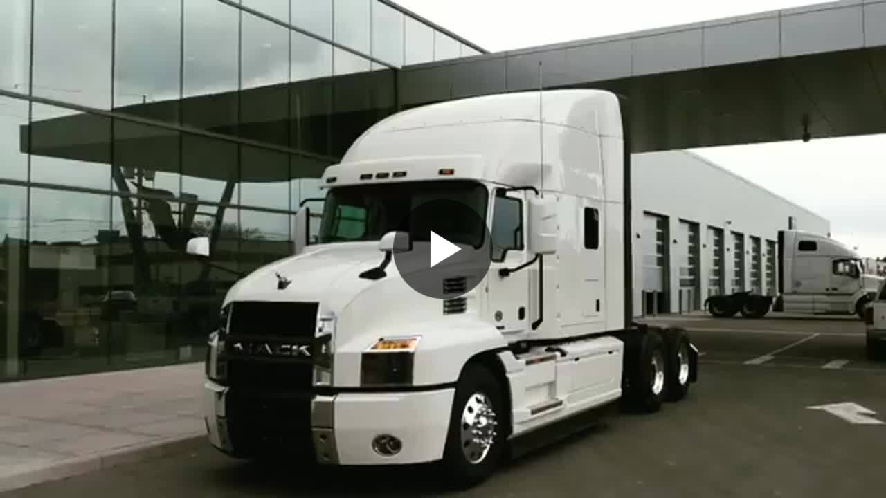
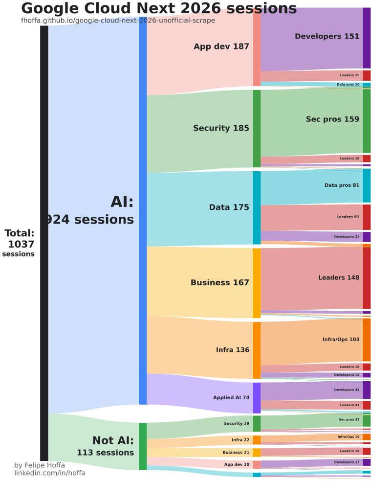
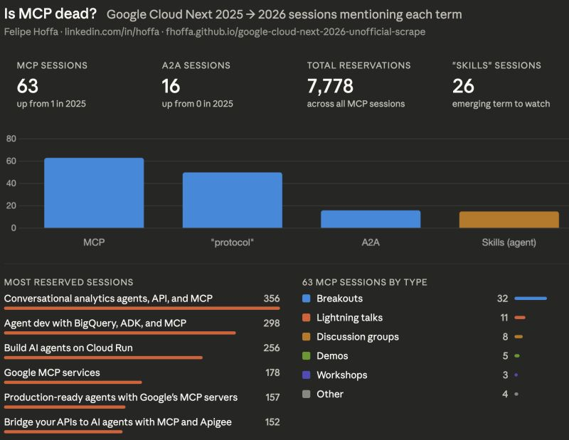
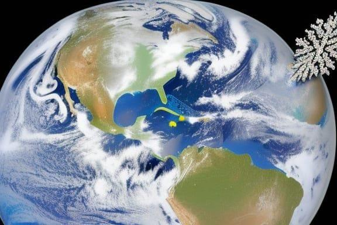
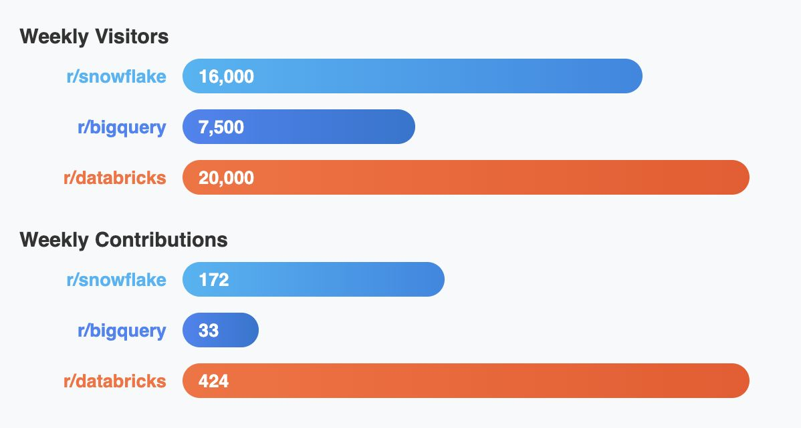
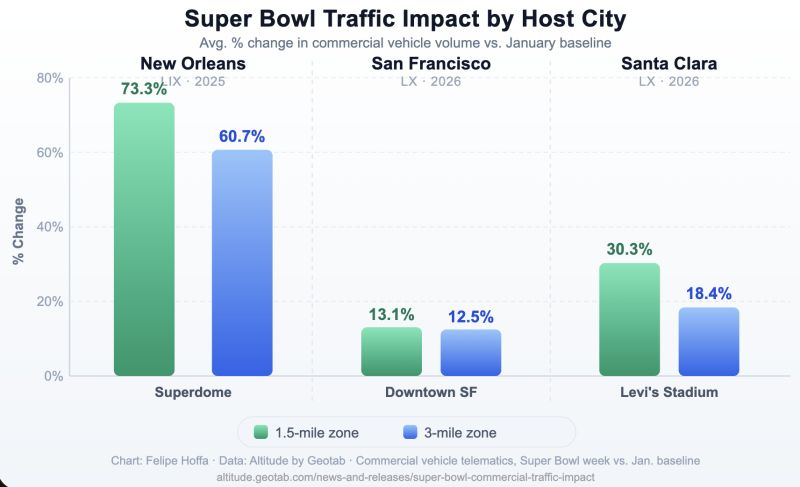
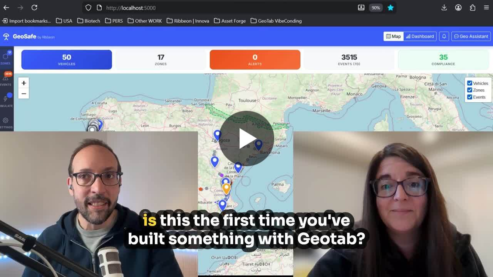
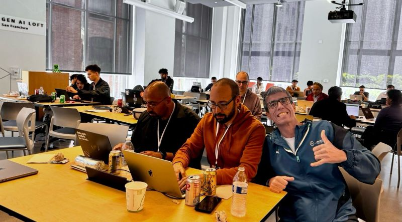
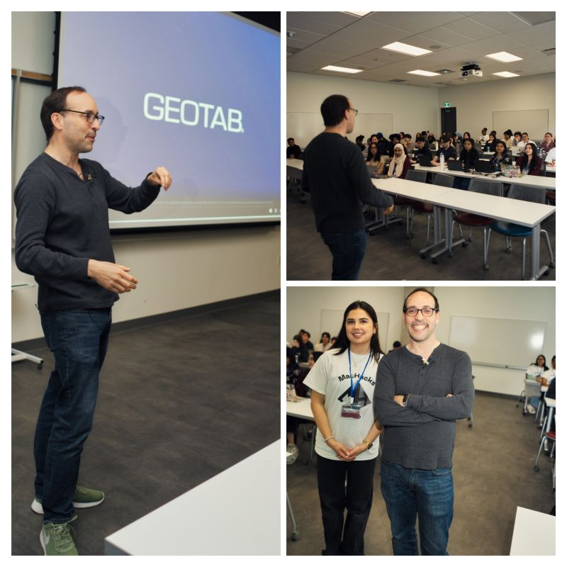

Felipe Hoffa
I build, analyze, and explain things across data, AI, developer tools, telematics, and community. This site is a guide to the projects I ship, the questions I keep chasing, and the writing that connects them.
Start here
If you want the fastest way to understand my work, start with the projects below, then follow the themes that show up again and again: career transitions, AI and agents, data systems, telematics, and the communities around them.
Projects
Google Cloud Next 2026 unofficial scrape
A public project that reorganizes conference session data into a more useful browsing experience, with better filtering, better visibility into trends, and a clearer path into the sessions that matter.
Geotab vibe guide
A collection of ideas, workflows, prompts, and examples for exploring what you can build around Geotab, telematics, and agentic tooling.
Career & identity
The long arc matters to me: how a career evolves, how identity shifts, and how major transitions change the work you want to do next.
 It’s exactly 10 years since my first day at Google
A reflection on career paths, growth, and what it means to find work that matches both strengths and curiosity.
I’m ready to announce my newest “label”
A personal post about stepping away from borrowed labels and deciding how to describe the work, and the person, more honestly.
It’s exactly 10 years since my first day at Google
A reflection on career paths, growth, and what it means to find work that matches both strengths and curiosity.
I’m ready to announce my newest “label”
A personal post about stepping away from borrowed labels and deciding how to describe the work, and the person, more honestly.

After a long break, I’ve chosen my next job A post about choosing direction deliberately, after enough time away to decide what kind of work is actually worth doing.AI & agents
I’m interested in where models fail, where they surprise us, and how the surrounding systems, interfaces, and protocols are evolving.

With 1,000+ sessions, 89% are about AI A concise look at where a major cloud conference is actually heading, based on the full session catalog rather than the marketing layer.
Is MCP dead? A post about what conference signals suggest about the move from AI assistants toward protocols, skills, and more agentic execution patterns.Data & infrastructure
Some of my favorite work lives at the intersection of systems, SQL, platform ecosystems, and the communities that form around them.

Snowflake tables on Cloudflare R2 for global data lakes A practical infrastructure post that ended up opening real partnership conversations, not just collecting impressions.
BigQuery vs Snowflake vs Databricks A broader-interest data post comparing community energy, not just product claims, around major platforms.Geotab & telematics
I like work that leaves the screen and touches operations, movement, traffic, logistics, and the real world.

How does hosting the Super Bowl reshape traffic in your city? A telematics-driven look at how a major event changes real-world traffic patterns, beyond the usual headlines.
If you're looking for inspiration to submit... A public builder post about hackathons, first-time participation, and what it looks like when people start making real things.Stories & community
Not everything worth following is a technical artifact. Some of the best signals come from cities, events, awkward moments, and the people around the work.

If I lived anywhere else in the world, I’d start planning a trip to San Francisco A broader, more human post about why San Francisco still matters if you care about being close to where new things happen.
I don’t usually show up late at night to a stranger’s house A travel-and-conference story that says something about curiosity, serendipity, and the human side of tech communities.Explore more in Stories & community
Browse all posts
Explore the full archive by topic in the posts archive.